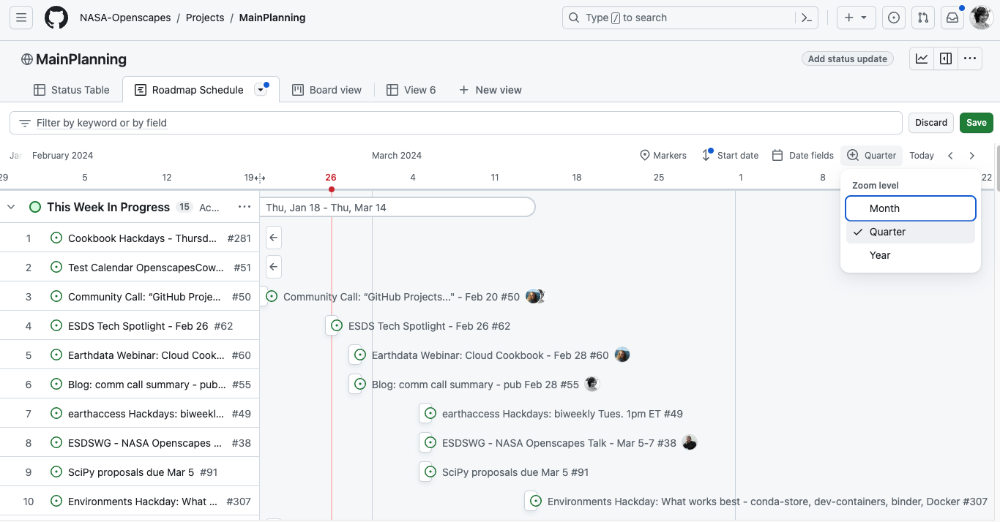

Openscapes Community Call: GitHub for NASA Openscapes community calendaring & project management
Bri Lind ![]()
Stefanie Butland
Quicklinks
Our 10th Openscapes Community Call was a screenshare-and-tell of how we’re using GitHub Issues, Projects, and the new Roadmap feature to have an open, dynamic way for many people to use and contribute to a “calendar”. We embrace working in the open and sharing how-we-work early before trying to make something “perfect” that doesn’t suit people’s needs so we were grateful for questions and suggestions from participants! Presented by Bri Lind, a Geospatial Data Scientist at NASA’s Land Processes Distributed Active Archive Center (LP DAAC) and a NASA Openscapes Mentor and Stefanie Butland Openscapes team member.
How do we know what we’re doing together and when we’re doing it?
NASA Openscapes Mentors develop, teach, and support many conference workshops, webinars, and participate in project hackdays with their main goal being to support scientists using NASA Earthdata as they migrate their workflows to the cloud. Bri set the stage with our motivation. People working across 11 NASA data centers (DAACs) need a way to see a year’s worth of “who’s here; what are we doing; when are we doing it; where can we find overlap with each other?” The work requires advance planning, and we’d love to avoid having everyone need to separately look up the registration deadlines for conferences. That can all be on a community calendar. We need a solution that is lightweight, with a low barrier to entry, and agnostic to specific calendaring software like Google Calendar vs Microsoft Outlook.
How we’re using GitHub for calendaring and management
“I’ve been waiting for something like this for… probably a year” - Bri Lind, NASA Land Processes data center.
For the past three years, we have been using GitHub as a community to collaborate around code, tutorials, and documentation, taking advantage of its features for version control, code review, and workshop book publishing. This is important not only because it helps us develop collaboratively as a team, but it’s also the same technology that Earth science researchers use, so we are able to develop practical experience to help them every day as we work. It made sense to explore using GitHub more deeply for our planning and calendaring.
We started using GitHub as a centralized place where any of the ~40 NASA Openscapes Mentors can post dates and information for a conference workshop they are leading, for example. Everyone else can see it, and someone might comment “I’m speaking at the same conference. I can give some hands-on help.”, or “Here’s a python notebook I created for a similar workshop last month.” During the Community Call, Stef screenshared our MainPlanning GitHub Project, the Roadmap view (screenshot below) that gives a calendar perspective and the Table view for details on each item. She demo’d creating a GitHub Issue, associating it with the Project, adding topic labels, and a Start date to have it appear in the Roadmap. She showed how we’re also documenting this as we go with screenshots in NASA Earthdata Cloud Cookbook - GitHub for Calendaring and Project Management.

How NASA’s LP DAAC and EMIT science teams are expanding this approach
NASA JPL’s Earth Surface Mineral Dust Source Investigation (EMIT) instrument aboard the International Space Station (ISS) uses imaging spectroscopy to detect surface mineralogy, methane gas plumes and ground surface characteristics from space. The NASA Land Processes data center works closely with the EMIT science team to distribute data and develop tutorial resources and they wanted a way to do that more fluidly. A place to strategically link meeting agendas/ notes/ tasks/ progress in a single ‘open’ location that allows individuals on both teams to be aware of progress and decisions as they are being made. The teams are using this space to do more things in the open and having fewer reasons to say “Where’s that doc? Can you email it to me?”
Dig into the discussion
Following the presentations, we had a rich discussion driven by participants’ questions. Topics included:
how to get different teams and people to ‘buy into’ a system like this;
how readily government agencies adopt this sort of approach with this level of transparency;
the importance of having something like this to support collaborations with groups that cannot access an organization’s internal Jira project management system;
quirks people encounter while GitHub continually improves the Projects system;
We all agreed on the need to start small to build comfort for people who aren’t yet familiar with GitHub. See our shared notes doc for details of questions and tips from participants
Citation
@online{lind2024,
author = {Lind, Bri and Butland, Stefanie},
title = {Openscapes {Community} {Call:} {GitHub} for {NASA}
{Openscapes} Community Calendaring \& Project Management},
date = {2024-02-28},
url = {https://nasa-openscapes.github.io//blog/2024-02-28-github-community-call},
langid = {en}
}